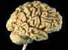
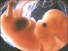
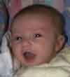

Human Nature
Brain Development and Learning
In this two-part series, we look at some of the basic processes that occur in brain development beginning at the embryonic state, and how the brain functions in relation to childhood learning and development.
In this series:
•The Developing Brain Part One (this page)
•The Learning Brain Part Two
Early Brain Development and Learning
By Kenneth Wesson
Guest Columnist and Education Consultant, Neuroscience

Psychologist Jean Piaget described play as the serious business of all childhood learning. During infancy, the means by which the youngest brains begin knowledge acquisition are all quite similar. Children, like many other mammals, begin learning through touch, imitation, exploration, discovery and play. A significant portion of our learning is governed by a genetically pre-determined sequence of skills, which are mastered based on how and when other regions and structures inside the human brain go "on-line." Just as the digestion of solids is preceded by a prerequisite consumption of liquids, ones tactile, visual, olfactory, motor and auditory experiences are all followed by more complex brain processes.The Developing Brain
During embryogenesis (the process by which an embryo is converted from a fertilized cell to a full-term fetus), brain cells develop at the astounding rate of over 250,000 per minute. There are several points during the process of neurogenesis (the production of brain cells) where over 50,000 brain cells are formed every second. By the twentieth week of fetal life, over 200 billion neurons have been created.

Later, a massive neural pruning of these large numbers of cells occurs. Approximately six weeks later, during the third trimester, only fifty percent of those cells remain alive. The surviving 100 billion neurons are the healthy cells, which are ready to aid the growth and development of the newborn child. The early overproduction of neurons and neural networks guarantees that the young brain will be capable of adapting to virtually any environment into which the child is born, whether it is San Francisco, South Africa or Singapore, tropical or tundra.

Billions of synapses are created in the womb during the process of synaptogenesis, a process by which the functional circuits in the brain get organized. Following birth, most new synapses come by way of ones experiences. These neural networks are subsequently used to comprehend newer events taking place in ones external world using our stored knowledge as the source of all understanding. There is a high correlation between the density of the neural connections representing ones specific knowledge, abilities or skills. Thus, it is easier to expand a childs future proficiencies by using the existing fertile neural networks.Increases in both the size and the weight of the brain are among the predictable neurophysiological results of a stimulating developmental environment. When children lack active healthy social encounters with others (from threats, stress and anxiety), we see brains that do not wire themselves properly in the emotional centers, which plays itself out in the most negative ways cognitively. According to Dr. Bruce Perry at the Baylor College of Medicine, the development of the cerebral cortex can be reduced by as much as 20% under these conditions rendering many brain structures under-developed. Diminishing ones learning opportunities reduces the quantity of neural networks, which decreases ones ability to learn in the future.
A fine-tuning of a childs emerging talents occurs between three and six years of age. At approximately age five or six, the brain has reached 90-95% of its adult volume and is four times its birth size. Ages three to six are the years during which extensive internal re-wiring takes place in the frontal lobes, the cortical regions involved in organizing actions, planning activities and focusing attention.
In addition to being genetically programmed, brain growth and development are also immensely influenced by neural plasticity. The brain constantly modifies the connections among its one trillion brain cells that are consistently impacted by incidents processed consciously and unconsciously by the brain. When new learning occurs, there is a neurophysiological correlate that is created to represent ones newly attained knowledge. The unfolding events that one encounters largely determine how much cortical growth will take place, in what regions that growth will take place, when, if, and where subsequent development will occur (or not) in his blossoming young brain. The very architecture of each human brain is altered as a result of all newly acquired skills and competencies. By the process of neural plasticity (the brains ability to undergo physical, chemical, and structural changes as it responds to experiences and to ones environment) the number and density of these functional neural pathways will be determined by the learning experiences one encounters.
Once born, the human brain is so incredibly responsive to external stimuli that we can now confidently state that nearly all early experiences and stimuli contribute in chemically and physically shaping the more than 200 anatomically-distinct processing systems within the growing brain. The sensitive developmental processes literally customize ones neuroanatomy and ultimately determine the brains structure-function correlations, including the regional and sub-cortical inner working capabilities of each human brain. Dr. Sally Shaywitz at Yale University is currently tracking the modifications that arise in the brains of five and six-year-old novice readers after they learn how to read as compared to their pre-reading brain architecture. In her analyses of magnetic resonance imaging (MRI) and positron emission tomography (PET), their brain alterations are compared to the expected structural and functional changes that normally transpire in the early cortical development of similarly aged children, as well as comparisons with the brains of experienced young readers.
If the region of the motor cortex that
is responsible for right-hand movement is damaged, the use of a
persons right hand will be substantially decreased or lost
completely. Similarly, if movement in the right hand is grossly
limited or restricted nearly to the level of non-use, the cortical
regions of the brain responsible for movement in that hand will
atrophy, as the neglected neural networks begin to shut down inside
the efficient brain. Interestingly, the cortical areas representing
the opposite (left) hand will often increase to compensate for the
loss of right-hand usage and a marked improvement in left-hand
dexterity and proficiency takes place. This phenomenon, compensatory
hypertrophy, is how the brain physically reorganizes itself after
brain trauma or injury in such a way that performance in the
opposite hand (or leg, or eye, etc.) is enhanced as a response to
the lost service of its counterpart. By doing so, one can adapt
(enhancing his chances of survival) as the brain modifies itself
always looking towards the future.
Continue to Part Two: The Learning Brain
Kenneth Wesson works as a keynote speaker and educational consultant for pre-school through university-level institutions and organizations. He speaks throughout the world on the neuroscience of learning and methods for creating classrooms and learning environments that are "brain-considerate." This series is posted with his permission.
^ Top ^